第 22 讲：FastAPI 入门（5.4）
在上一节中，我们仅仅依靠 Python 内置的 http.server 模块，“纯手工”搓出了一个基础的 HTTP API。虽然代码量不算多，但为了把一段简简单单的个人资料 JSON 数据发送出去，我们耗费了大量精力去处理 HTTP 协议底层的各种琐碎细节：逐行比对路径、手工写入状态码与响应头、精准输出 \r\n 空行、做二进制流编码与 404 兜底。
更关键的是，上一讲我们仅仅实现了一个最基础的 GET 接口。如果面对带有复杂参数、需要校验合法性的 POST 接口，手搓代码的繁重程度将呈指数级上升。
从本节开始，我们将告别手搓杂活，正式引入现代 Python 生态中最流行的高性能后端框架——FastAPI。我们将用极度优雅的几行代码重构上一节的接口，并进一步实现带有数据校验闸门的 POST 分析接口，直观体会框架带来的巨大生产力跃升。
flowchart TD
subgraph HandMadeHell ["上一节：手搓原生的繁杂杂活"]
HM1["手动比对 if self.path == ..."]
HM2["手动 send_response(200)"]
HM3["手动 send_header Content-Type"]
HM4["手动 end_headers 空行"]
HM5["手动 json.dumps + encode('utf-8')"]
HM6["手动 else 分支 404 兜底"]
end
subgraph FastAPIElegance ["本节：FastAPI 声明式现代架构"]
App["app = FastAPI()"]
RouteDecorator["@app.get('/api/profile')"]
PyFunc["def get_profile():\n return profile"]
UvicornDriver["Uvicorn ASGI 异步引擎 (自动托管网络/并发/状态码/序列化/404)"]
SwaggerAuto["自动生成 /docs 交互式 Swagger 文档"]
PydanticGate["Pydantic 数据模型自动校验 (防注入/类型拦截)"]
App --> RouteDecorator --> PyFunc
App --> UvicornDriver
App --> SwaggerAuto
App --> PydanticGate
end
HandMadeHell -.->|框架封装演进| FastAPIElegance
1. 为什么需要框架？从协议杂活到专注业务
(参考时间: 00:50)
在上一讲手搓代码时，我们写的 80% 以上的代码都在“伺候” HTTP 协议：
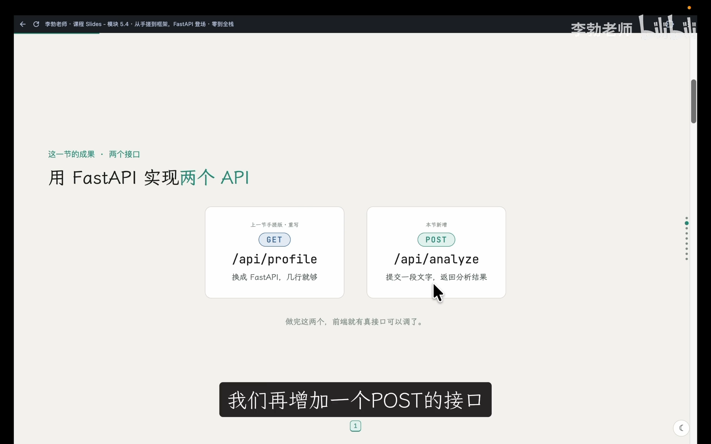
📷 上一讲手搓代码与本节核心重构目标
在 B 站中打开 (00:00:45)
但从真实业务需求的角度来看，我们的诉求其实非常朴素：
“当外界请求
/api/profile时，把个人资料数据字典送出去。”
这就是Web 后端框架（Web Framework）诞生的根本价值：将所有与具体业务无关的通用网络传输、报文解析、路由派发、序列化和错误兜底全部高度内聚封装，让开发者能够 100% 聚焦于核心业务逻辑本身。
2. Python 后端三大框架横向对比
(参考时间: 02:15)
在 Python 浩瀚的开源生态中，有三个家喻户晓的 Web 框架：
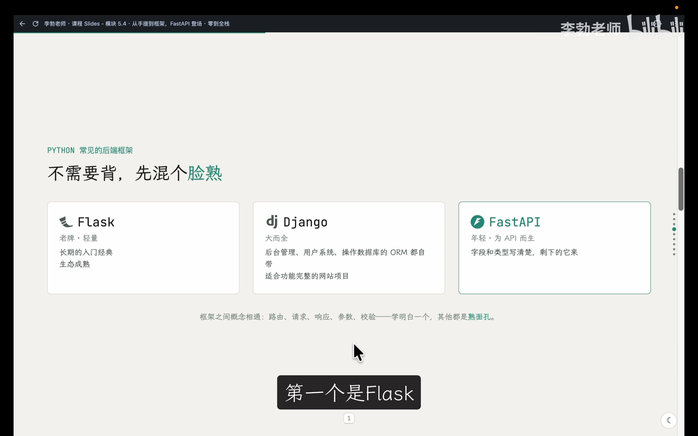
📷 Python 常见三大后端框架定位对比
在 B 站中打开 (00:02:30)
mindmap
root((Python 后端三大框架))
Flask
老牌微框架 (Micro-framework)
极简核心，按需装配插件
适合快速原型与小型脚本
Django
大而全 (Batteries-Included)
内置 ORM、认证系统、Admin 运营后台
适合中大型企业级内容管理与全包项目
FastAPI
现代异步首选 (Modern & Async)
面向现代 API 设计，基于 Python 类型提示
内置 Pydantic 自动数据校验
自动生成交互式 OpenAPI / Swagger 文档
性能媲美 NodeJS 与 Go
为什么本课程选择 FastAPI？
- 上手门槛低且代码极致优雅：基于 Python 原生 Type Hints 类型注解，几乎不需要学习冗长的心智模型；
- 自动化开箱即用：无需额外安装复杂库，自带数据解析、请求拦截与交互式接口文档；
- 顶级的官方文档：FastAPI 官网的用户教程（User Guide）编写极其详实细腻，不仅教“怎么用”，还通俗解释“为什么这么设计”，被无数开发者誉为绝佳的工程学习教材。
3. 架构分工：FastAPI 与 Uvicorn 的默契配合
(参考时间: 05:20)
在手搓代码中，我们既写了处理逻辑（Handler），又在末尾调用了 HTTPServer.serve_forever() 去监听端口。但在现代化框架工程中，这两项职责进行了彻底解耦：
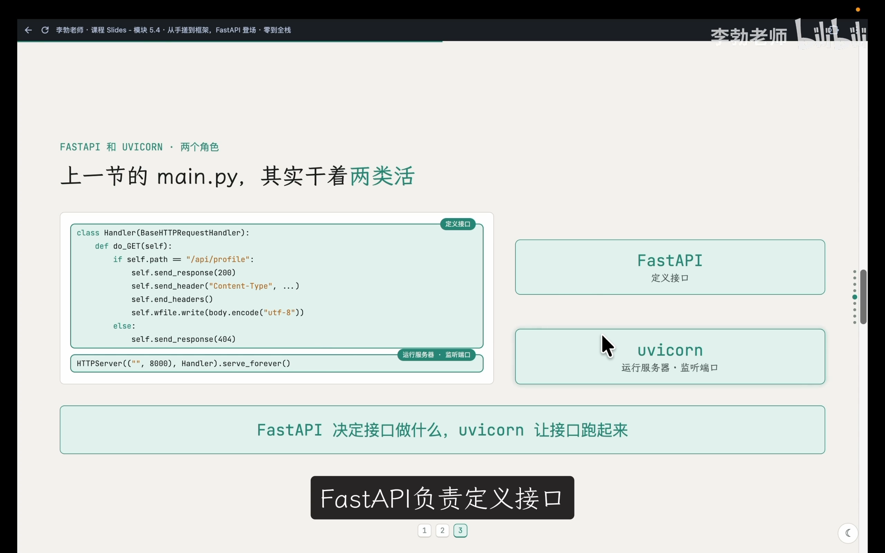
📷 FastAPI 与 Uvicorn 职责分工图解
在 B 站中打开 (00:06:10)
sequenceDiagram
autonumber
actor Client as 外部客户端 (浏览器 / curl)
participant Uvicorn as Uvicorn (ASGI 网络服务器)
participant FastAPI as FastAPI (业务应用层)
participant Handler as 路由处理函数 (def get_profile)
Client->>Uvicorn: 1. 发送 HTTP 请求 (访问 8000 端口)
Note over Uvicorn: 负责网络套接字监听与高并发连接维护
Uvicorn->>FastAPI: 2. 转换为标准 ASGI 请求事件派发
FastAPI->>FastAPI: 3. 匹配路由规则 (@app.get)
FastAPI->>Handler: 4. 执行业务逻辑
Handler-->>FastAPI: 5. 返回原生 Python 字典 (profile)
Note over FastAPI: 自动完成 JSON 序列化、写入 Content-Type
FastAPI-->>Uvicorn: 6. 返回 HTTP 响应报文事件
Uvicorn-->>Client: 7. 将二进制流推回客户端网络连接
- FastAPI（应用大脑）：决定接口做什么（路由、校验、组装数据）；
- Uvicorn（动力引擎）：负责监听端口、维持网络连接，并将 HTTP 数据流转交给 FastAPI。
安装 FastAPI 标准全家桶
确保位于 zero-to-tech/backend/ 目录下且虚拟环境处于激活状态，执行安装命令：
pip install "fastapi[standard]"
[!NOTE] 包名后方中括号
[standard]是 pip 的“扩展套餐”语法，表示在安装 FastAPI 本体的同时，自动捆绑拉取官方推荐的全部标准配件（包括高性能 ASGI 服务器uvicorn、类型校验库pydantic等），省去逐一单独配置的麻烦。
4. 极简重构：重写 GET /api/profile
(参考时间: 09:15)
为了保留历史学习足迹，我们先将上一节的手搓文件重命名备份：
mv main.py handmade.py
接着，新建全新的 main.py 并写入以下代码：
from fastapi import FastAPI
app = FastAPI()
profile = {
"heroTitle": "关于我",
"heroSubtitle": "项目, 创意, 灵感, 心得, 我的作品",
}
@app.get("/api/profile")
def get_profile():
return profile
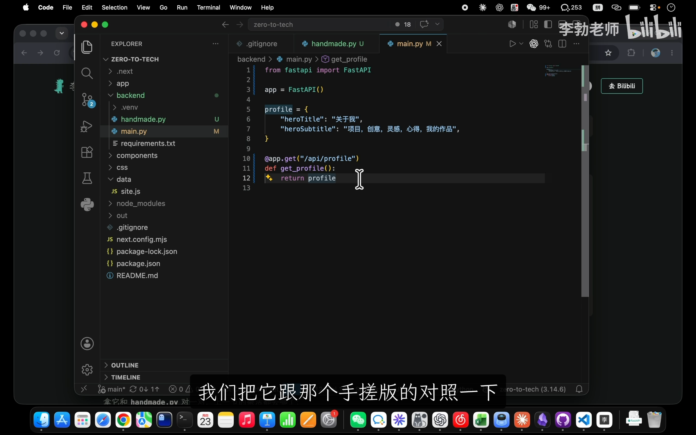
📷 手搓原生版与 FastAPI 框架版的代码量悬殊对比
在 B 站中打开 (00:11:30)
对比上一节手搓的数十行代码，框架重构后的代码仅仅只有 10 余行！
核心语法剖析
app = FastAPI()：创建框架的核心应用实例；@app.get("/api/profile")：路由装饰器（Route Decorator）。向框架注册规则——凡是发往/api/profile的GET请求，全部交由下方绑定的函数处理；return profile：无需调用json.dumps()，无需.encode("utf-8")，直接返回原生 Python 字典，框架会自动将其序列化为合法的 JSON 字符串，并自动在响应头中附带Content-Type: application/json和状态码200 OK。
5. 服务的运行与开发模式热重载
(参考时间: 13:00)
传统 Uvicorn 启动方式
uvicorn main:app --reload
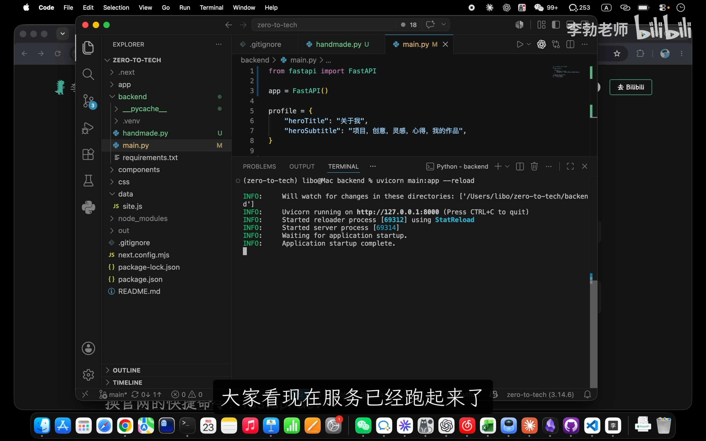
📷 使用 uvicorn 启动并开启热重载
在 B 站中打开 (00:14:40)
main:app：冒号左侧的main对应 Python 文件名main.py；右侧的app对应代码内部创建的app = FastAPI()实例对象；--reload：开启热更新（Hot Reloading）。文件保存后无需手动重启终端，后台进程会自动重新加载最新代码。
现代化官方标准命令：fastapi dev
FastAPI 新版本引入了专为开发量身定制的集成指令：
fastapi dev
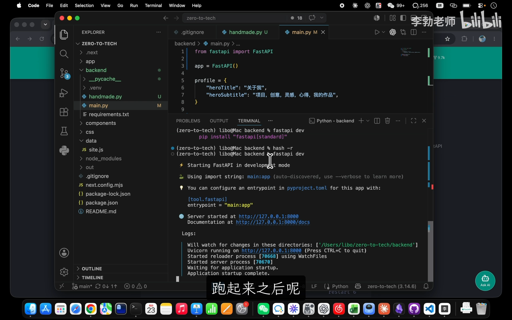
📷 使用 fastapi dev 现代化指令一键启动
在 B 站中打开 (00:15:55)
fastapi dev 默认自动定位当前目录下的 main.py 及其中的 app，并全自动开启热更新与详细调试日志，更加简洁直观。
[!TIP] 如果首次运行提示
command not found: fastapi，说明终端尚未更新虚拟环境的可执行程序缓存，在终端执行hash -r刷新命令索引即可。
接口调用与 404 智能兜底
在另一个终端使用 curl 验证接口：
curl http://localhost:8000/api/profile
终端立即返还了正确的 JSON 数据：
{"heroTitle":"关于我","heroSubtitle":"项目, 创意, 灵感, 心得, 我的作品"}
如果故意访问一个不存在的路由（如 curl http://localhost:8000/hi）：
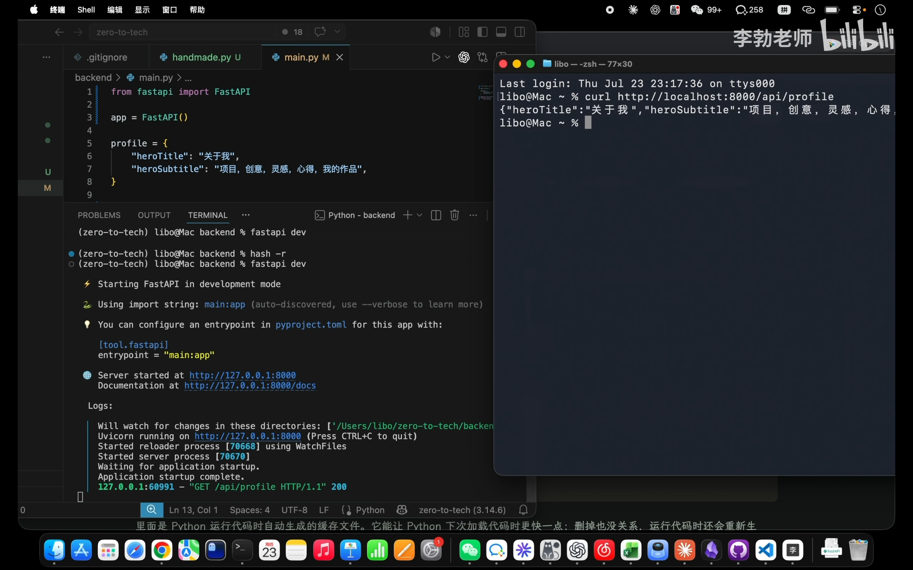
📷 测试未定义路径由 FastAPI 自动返回标准 404 JSON
在 B 站中打开 (00:17:30)
FastAPI 会自动拦截并返回标准的 HTTP 404 响应：
{"detail":"Not Found"}
我们无需编写任何 else 兜底逻辑，框架已将异常处理打磨至极致。
配置 Git 忽略文件
服务运行后，Python 会在项目根目录下生成 __pycache__/ 目录，存放编译好的 .pyc 字节码文件以加速下次启动。此类缓存属于运行产物，严禁提交进代码仓库。
在根目录 .gitignore 中追加：
# Python 字节码缓存目录与文件
__pycache__/
*.pyc
6. 神仙特性：自动生成的 Swagger 交互式文档
(参考时间: 19:20)
启动服务时，控制台有一行引人注目的日志：
INFO: Documentation at: http://127.0.0.1:8000/docs
在浏览器中直接访问该地址，屏幕上呈现出一个完全由框架根据代码静态推导生成的 Swagger UI 交互式接口文档：
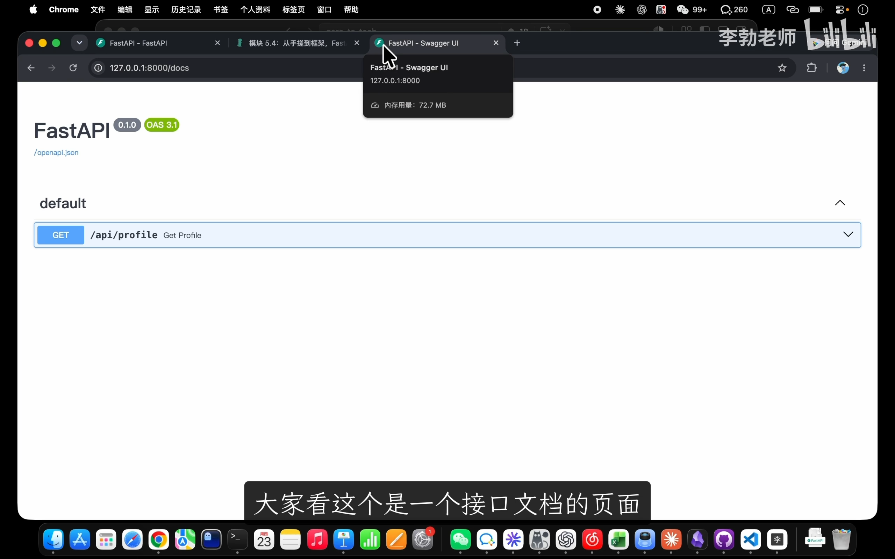
📷 浏览器打开 /docs 自动呈现 Swagger UI 交互式文档
在 B 站中打开 (00:19:50)
点开接口条目，点击右侧的 Try it out 并点击 Execute，网页将直接向本地运行的后端发起真实的 HTTP 请求，并在下方清晰展示 Request URL、Response Body 以及 Response Headers：
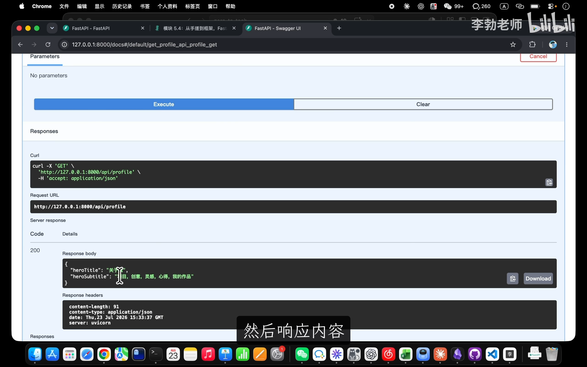
📷 在 Swagger UI 中一键在线测试接口与查看响应
在 B 站中打开 (00:20:15)
这彻底解决了传统全栈开发中“代码更新了但文档遗漏未改”的行业通病，前后端协作调试效率成倍提升。
7. 实战进阶：增加 POST /api/analyze 与 Pydantic 校验闸门
(参考时间: 21:00)
在前端第 3 模块中，我们曾经开发过一个“文字实验室（Text Lab）”组件，用户在文本框输入文字后，页面需要展示原文、拼音、字数评分与情感倾向卡片。
现在，我们为该业务量身打造一个 POST 接口。
业务接口需求定义
- 客户端入参：必须提交一个 JSON 对象，包含文本字段
text（字符串类型）； - 服务端返回：返回带有四个卡片结果的 JSON 数据。
在 main.py 中引入 Pydantic 的 BaseModel 并扩建代码：
from fastapi import FastAPI
from pydantic import BaseModel
app = FastAPI()
# 1. 定义入参数据结构规范 (Schema)
class AnalyzeRequest(BaseModel):
text: str
# 原个人资料数据保持不变
profile = {
"heroTitle": "关于我",
"heroSubtitle": "项目, 创意, 灵感, 心得, 我的作品",
}
@app.get("/api/profile")
def get_profile():
return profile
# 2. 注册 POST 路由并挂载请求体模型
@app.post("/api/analyze")
def analyze(req: AnalyzeRequest):
return {
"text": req.text,
"score": 0.5,
"label": "偏平静",
"pinyin": "（模块 6 再说）",
}
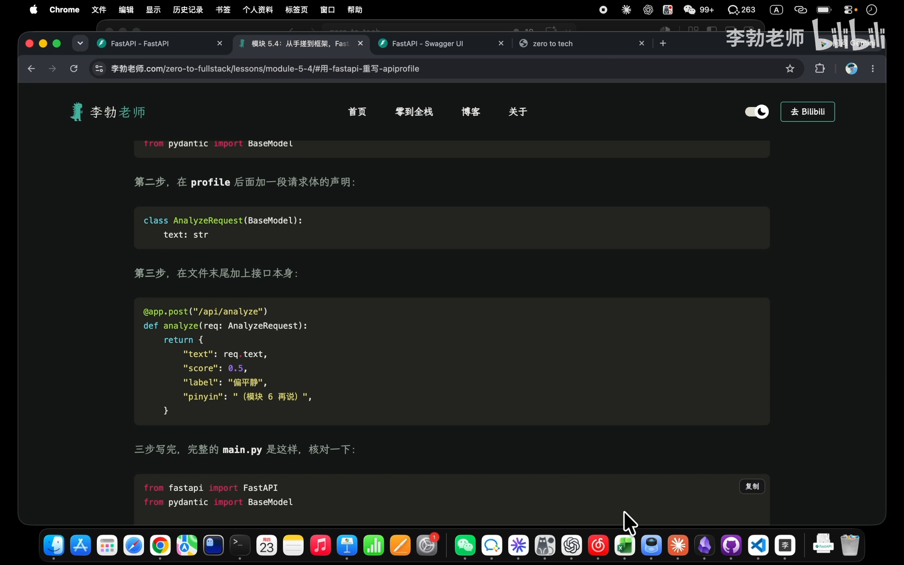
📷 定义 BaseModel 与 POST 接口代码实现
在 B 站中打开 (00:23:45)
Pydantic 数据校验闸门机制
flowchart TD
ClientReq["客户端 POST /api/analyze<br/>发送 JSON 载荷"] --> Gateway{"FastAPI + Pydantic<br/>数据校验闸门"}
Gateway -- "符合规范 (含合法 text 字段)" --> SuccessBranch["通过拦截<br/>进入 analyze 业务函数"]
SuccessBranch --> Return200["返回 200 OK + 分析结果 JSON"]
Gateway -- "不符合规范 (缺少 text 或类型错误)" --> RejectBranch["直接就地拦截<br/>阻断进入业务层!"]
RejectBranch --> Return422["自动返回 422 Unprocessable Entity<br/>+ 精确指明出错字段与原因"]
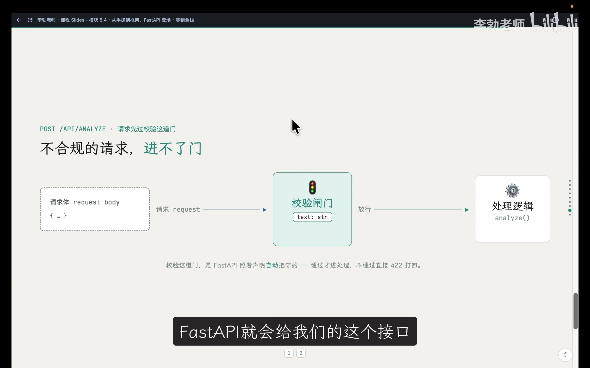
📷 Pydantic 校验闸门示意图：合法通过 vs 非法就地拦截
在 B 站中打开 (00:25:50)
我们仅仅在函数入参中写了 req: AnalyzeRequest，FastAPI 就会在底层自动调用 Pydantic 执行严格的格式审查。
正确请求测试
在终端中发起符合规约的 POST 请求：
curl http://localhost:8000/api/analyze \
-H "Content-Type: application/json" \
-d '{"text": "今天的风很轻，适合把想法写下来"}'
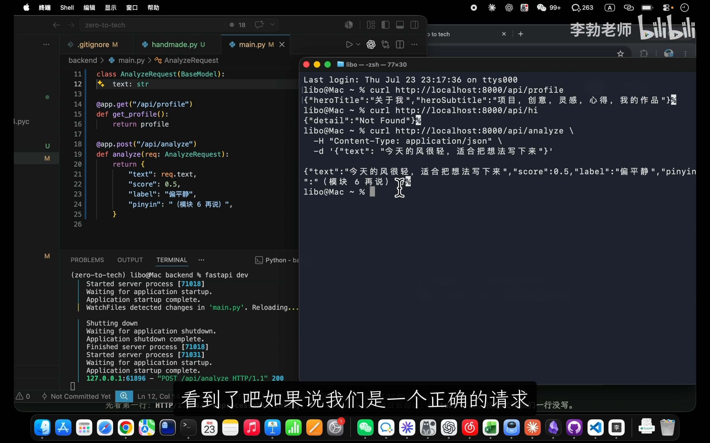
📷 正确 POST 请求成功获取四个字段的分析数据
在 B 站中打开 (00:27:40)
终端成功获得期望的数据结构返回：
{"text":"今天的风很轻，适合把想法写下来","score":0.5,"label":"偏平静","pinyin":"（模块 6 再说）"}
8. 调试与排错：422 vs 500 与 Traceback 抓漏秘籍
(参考时间: 28:00)
场景一：客户端参数错误（422 Unprocessable Entity）
如果客户端不小心把 text 字段少打了一个字母写成了 txt：
curl -i -X POST http://localhost:8000/api/analyze \
-H "Content-Type: application/json" \
-d '{"txt": "你好，全栈！"}'
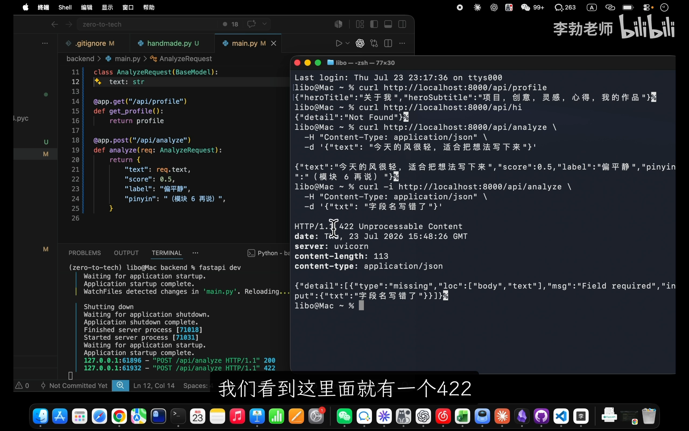
📷 客户端传参错误由框架自动拦截并返回 422 状态码
在 B 站中打开 (00:28:30)
终端立即拦截并返回了详细的报错清单：
HTTP/1.1 422 Unprocessable Entity
content-type: application/json
{
"detail": [
{
"type": "missing",
"loc": ["body", "text"],
"msg": "Field required",
"input": {"txt": "你好，全栈！"}
}
]
}
[!TIP] HTTP 状态码的责任划分： *
4xx（如 422）：代表调用方（客户端）的过错。请求参数缺失或非法，服务端守门人拒绝入内； *5xx（如 500）：代表被调用方（服务端）的过错。业务代码逻辑抛出未捕获的严重异常。
场景二：服务端代码 Bug（500 Internal Server Error）
假设后端开发者在处理函数中手滑写错，试图访问不存在的属性（如 return {"text": req.txt, ...}）：
客户端发送正确的请求后，服务端直接崩溃并返回：
HTTP/1.1 500 Internal Server Error
{"detail":"Internal Server Error"}
此时客户端只知道服务器内部出错了，但无法探知具体的代码行。此时排查问题的唯一阵地是服务端的控制台终端。
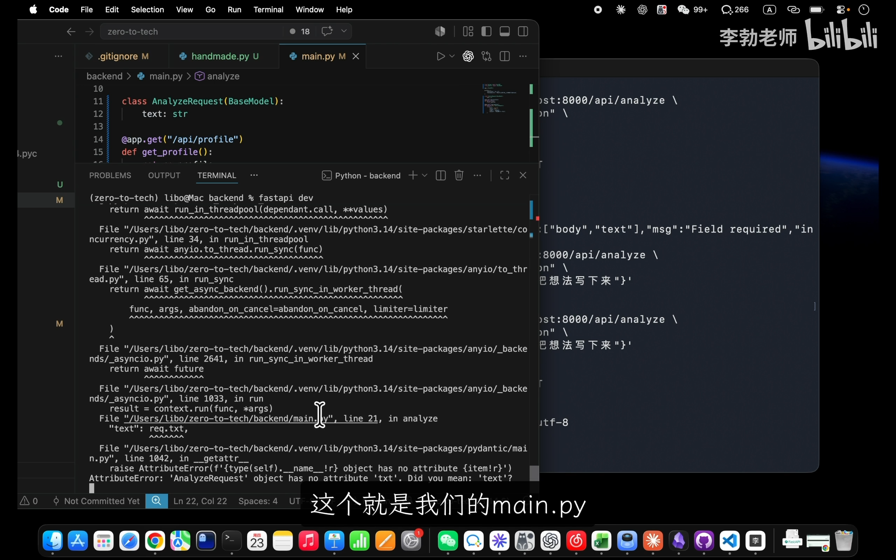
📷 服务端终端打印的详细 Python Traceback 报错分析
在 B 站中打开 (00:32:15)
读懂 Python Traceback 的两大诀窍
面对终端刷出的一长串调用栈，切忌慌乱关掉窗口。掌握以下两个排查顺序，10 秒内定位根因：
- 第一眼直奔最底行：最末尾的一行直接道破了错误原因（Root Cause）：
text AttributeError: 'AnalyzeRequest' object has no attribute 'txt' - 从下往上找自己编写的文件：跳过框架和 Python 库内部的繁杂栈帧，寻找带有
main.py的行号标识：text File ".../zero-to-tech/backend/main.py", line 28, in analyze_text清晰定位第 28 行！将req.txt改回req.text保存，热重载自动修复，服务满血复活。
9. 依赖固化与版本提交
(参考时间: 33:40)
本节通过 pip install "fastapi[standard]" 引入了完整的现代后端技术栈。按照工程规范，必须将更新后的依赖版本精确写入清单：
pip freeze > requirements.txt
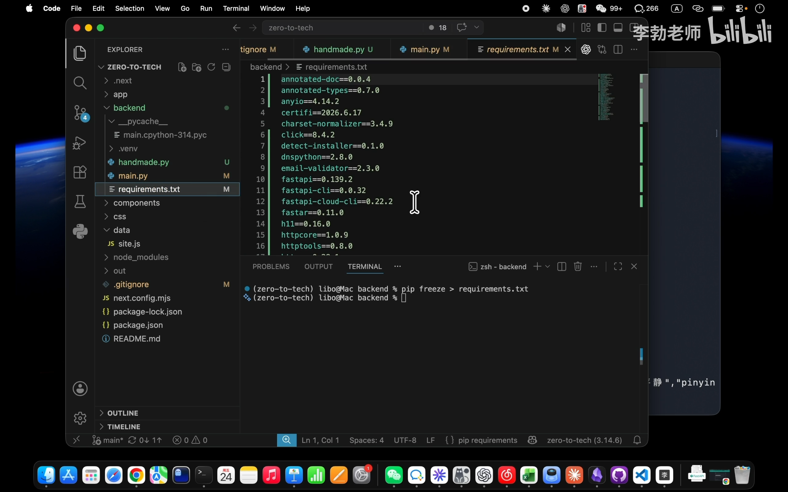
📷 重新生成 requirements.txt 固化 FastAPI 与全套生态依赖
在 B 站中打开 (00:34:25)
此时打开 requirements.txt，可以看到 fastapi、uvicorn、pydantic、starlette 等数十个核心依赖库均已精确锚定版本号。
在 Git 中完成本次里程碑的提交：
git add main.py handmade.py requirements.txt .gitignore
git commit -m "feat: 使用 FastAPI 重构后端并实现参数校验与自动化文档"
10. 本节小结与下一阶段展望
(参考时间: 35:00)
在本节中，我们见证了从原生手搓到现代 Web 框架的降维式提升：
* 路由派发：从繁复的字符串 if...else 进化为优雅的 @app.get / @app.post 装饰器；
* 异步引擎：利用 Uvicorn 实现了高并发请求接管与热更新开发体验；
* 数据校验：基于 Pydantic 的 BaseModel 筑起了牢固的数据防线；
* 交互文档：开箱即用的 /docs Swagger UI 彻底重塑了接口自解释与在线调试标准。
此时此刻，我们的前端页面在 localhost:3000 优雅呈现，后端接口在 localhost:8000 蓄势待发。然而，前后端之间依然是一座孤岛。在下一讲中，我们将让前端正式跨越端口调用这两个后端接口，并彻底攻克现代全栈开发中无人能逃的经典关卡——跨域资源共享（CORS）。